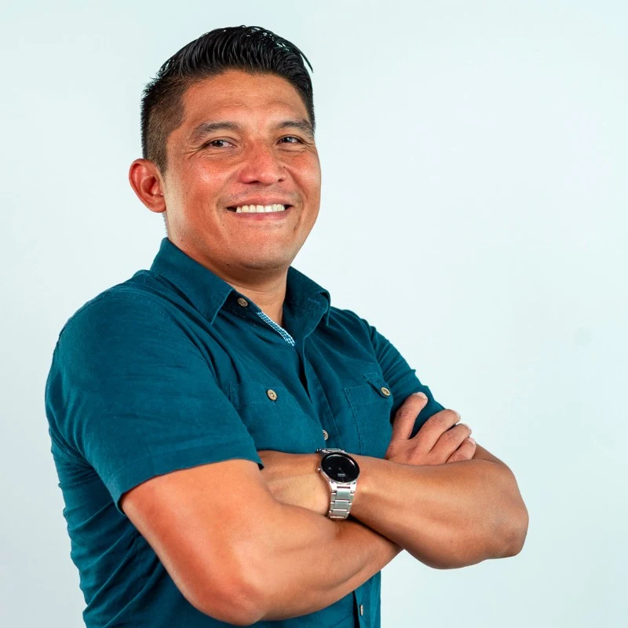

WordPress engineering
Custom themes, plugins, and editor experiences that give teams the flexibility to do more.
- Object-oriented PHP
- Gutenberg
- Custom ACF blocks
- WooCommerce
Senior WordPress Engineer
I’m Darwin Mateos, a Senior WordPress Engineer based in Mérida, Mexico. I build custom WordPress websites, plugins, and integrations for teams worldwide.
Experience across
teams & platforms
Selected work
Website contributions made in collaboration with agency and client teams.
WordPress expertise
From the first custom block
to the production deployment.
Custom themes, plugins, and editor experiences that give teams the flexibility to do more.
Thoughtful integrations and dependable workflows, from third-party APIs to automated deployments.
Fast, accessible, maintainable websites. Careful debugging and production checks come with the work.
WordPress · PHP · JavaScript · Git · Docker · WP Engine · Cloudflare · Claude & Copilot

About Darwin
I’m Darwin Mateos, a software engineer with 18+ years of experience and a deep focus on WordPress, PHP, and modern JavaScript.
I’ve worked across healthcare, tourism, real estate, nonprofits, and e-commerce. I enjoy the whole process: understanding the problem, shaping the solution, and making sure it works in the real world.
I collaborate with distributed teams in English and Spanish, bring care to code reviews, and use AI tools to support thoughtful engineering.
Professional experience
Custom features, migrations, performance, accessibility, and production support across client websites.
WordPress / PHPConsumer-facing web products, peer code reviews, and delivery with distributed Agile teams.
JavaScript / DockerWordPress VIP solutions, custom ACF blocks, API integrations, and deployment workflows.
WordPress VIP / ACFWordPress development, debugging, responsive interfaces, and multi-environment deployments.
WordPress / GitAdditional experience with Parallel Staff, CrateBind, KSquare Group, HCL Technologies, Justia, and Fractalia. Full chronology in my résumé.
Open to the next good challenge
Have a role, a project, or a tricky WordPress problem?
ethan06@gmail.com